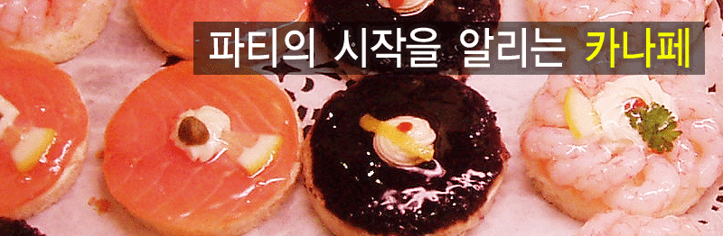

카나페의 유래는 프랑스로 어원은 '긴 의자'라는 뜻이라고 한다. 긴 의자처럼 생긴 식빵을 자른다고 해서 붙여진 이름이다
샌드위치보다 역사가 오래된 것으로 19세기 초부터는 전채요리를 뜻하는 오르되브르에 속하게 되었다. 카나페는 칵테일이나 양주 안주로도 좋고 간단한 식사거리로도 해결된다.
전채요리는 식욕을 돋구는 요리이다. 전채요리는 음식에 대한 기호, 먹고싶은 욕구, 배고픔이 음식에 대한 심리학적인 욕구를 일으키는 요리이다.
오르되브르(Hors d'oeuvre)는 식전에 나오는 모든 요리의 총칭을 말한다. Hors는 앞이라는 뜻이고 oeuvre는 작업, 식사를 의미한다. 이러한 까닭으로 그 목적도 역시 식욕증진에 있다. 오르되브르는 영어로는 애피타이저(Appetizer)이고 우리말로는 전채라 한다. 전채(前菜)는 오늘날 서양 음식에서 빼놓을 수 없는 중요한 사명을 띠고 있다. 따라서 오르되브르는 언제나 그 조리법이 다양하고 재치있는 기술을 구사하여 미각과 시각을 동시에 끌 수 있도록 꾸며져야 한다.
캐비어, 푸아그라, 트뤼프는 전채의 3대 진미로 늘 꼽힌다. 캐비어(caviar)는 철갑 상어의 알인데 계란 흰자 다진 것, 레몬, 버터, 멜바 토스트와 함께 제공된다. 푸아그라(foie gras)는 거위의 간으로 만든 것으로 모양과 형태는 간과 비슷한데, 프랑스에서도 고가의 요리이다. 여기에 가운데다 트뤼프(truffle)를 넣기도 한다.
카나페는 빵을 얇게 썰어서 여러가지 모양으로 잘라 튀기거나 토스트하거나 빵을 그냥 사용하기도 한다. 빵 위에 버터를 바른 다음 그 위에 여러가지 재료(생선알, 안초비, 채소, 햄, 훈제 연어, 치즈, 캐비어, 생선 무스 등)를 얹어 만든다. 빵을 구우면 수분이 천천히 흡수되기 때문에 크래커를 이용해 만들기도 한다. 카나페는 다양성과 상상력이 중요한데, 냉장고에 남아 있는 재료들을 모두 이용하여 1인분에 2~3개정도 돌아 가게 준비하도록 하고, 만든 다음 밖에서 오래 보관하면 마를 우려가 있으니 주의해야 한다.
▣ 재료선택
: 새우 4마리, 양상치 1잎, 파슬리 1줄기, 토마토케찹 10ml, 마요네즈 10ml, 빵 1조각, 달걀 1개
▣ 만드는 법
* 냄비에 물을 넉넉히 넣고 끓으면 소금과 식초를 넣고 달걀에 2~3번 뜨거운 물을 끼얹은 다음 냄비에 넣고 3분간 굴리고 다시 10분간 삶는다.
▣ 재료선택
: 고구마 3개, 설탕 30g, 우유 1/3컵, 생크림 1컵, 럼주 1작은술, 카스테라 1개, 빼배로 4개, 레몬즙 약간, 럼주(음식의 불필요하나 냄새를 제거하고 산뜻한 향과 맛을 준다. 대형 수퍼마켓에 가면 구입 가능하며 안 넣어도 지장없다.)
▣ 만드는 법
찐 고구마를 체에 받쳐 내리면 입자가 고와지고 부드러워 먹기에 좋다.